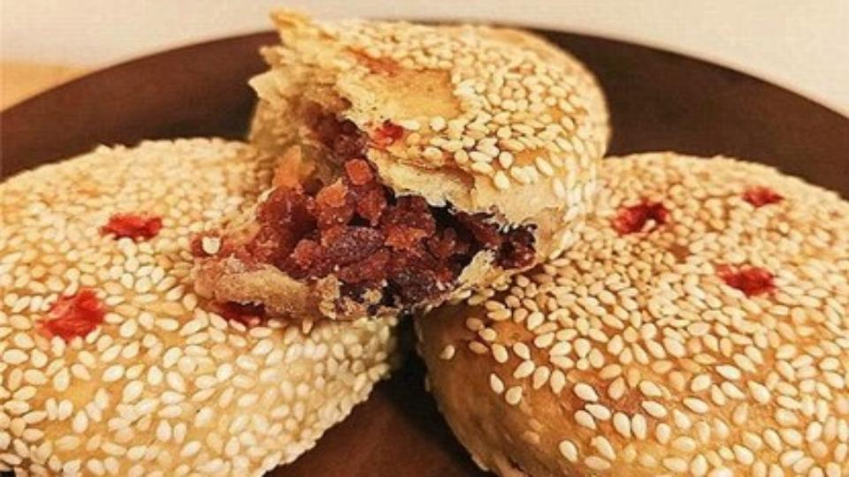
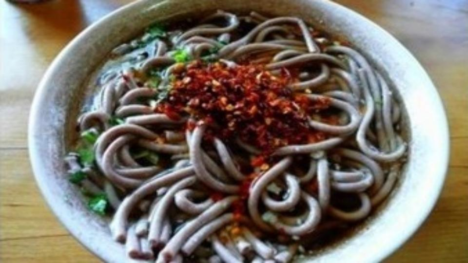
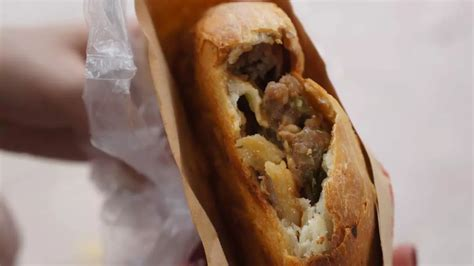
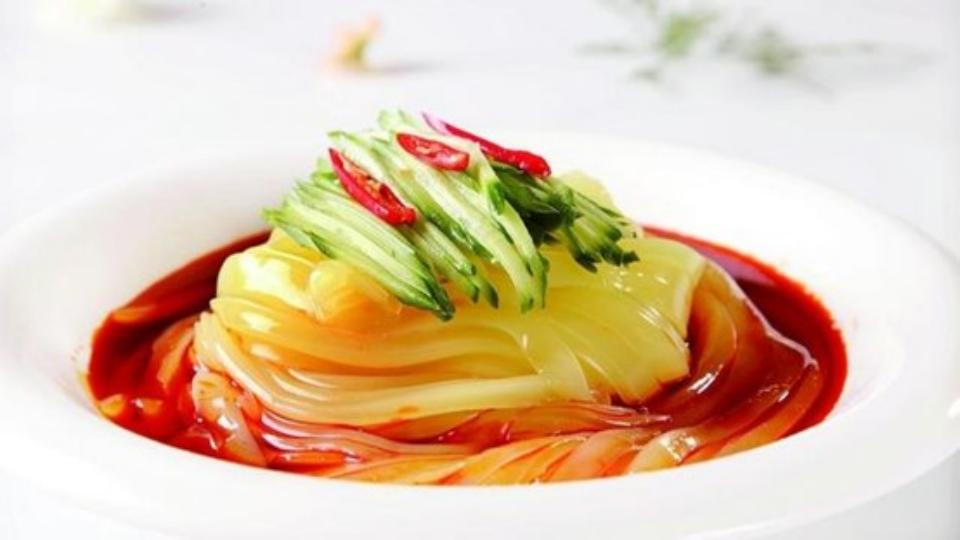
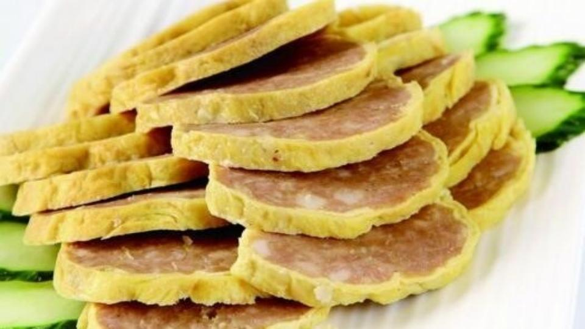
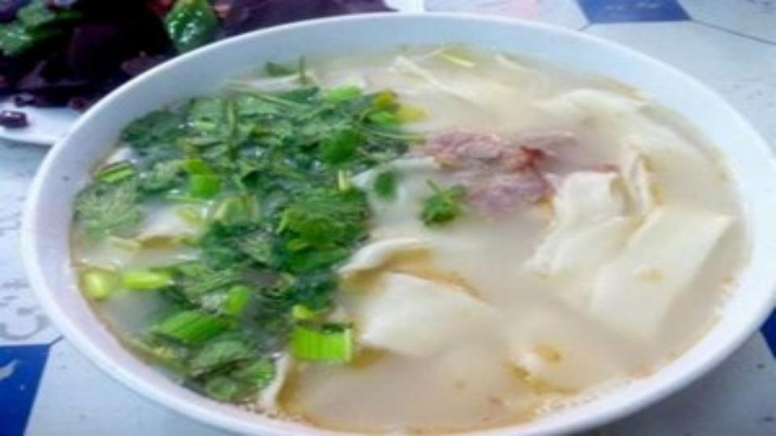
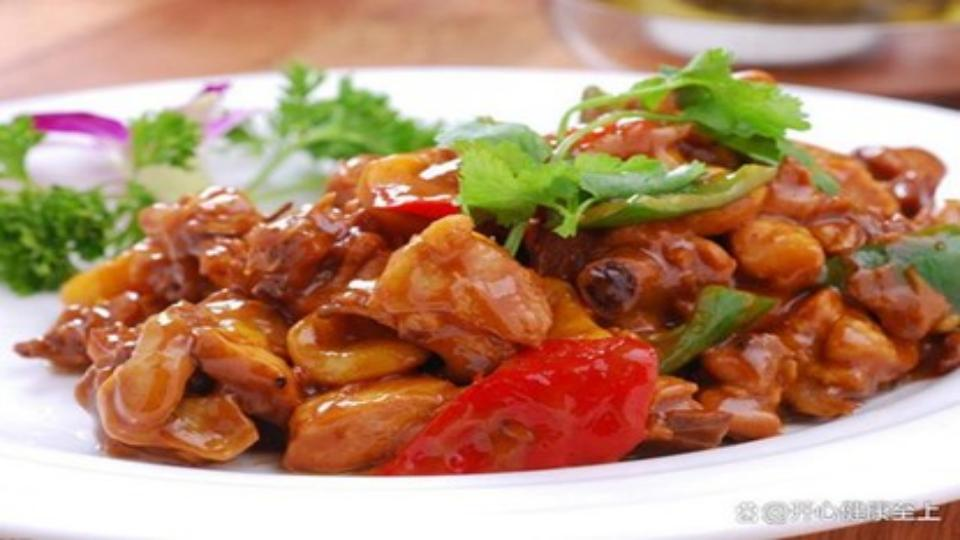
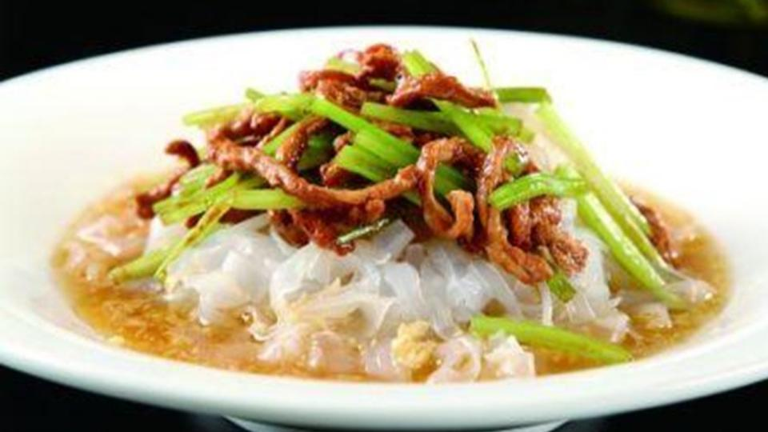
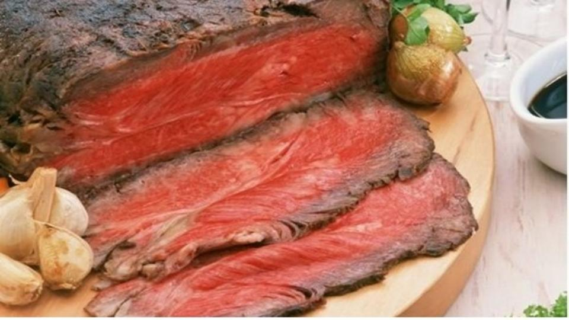

起源和历史：牛忠喜烧饼是河南省新乡市的传统小吃，由国家级烧饼大师牛忠喜积多年经验制作而成。1980年被评为河南省优质产品，并正式定名为“牛忠喜烧饼”，1989年获商业部系统商品“金鼎奖”。 材料和制作：牛忠喜烧饼采用面粉等材料制作，其烧饼松酥起层，香而不腻，无硬核，冬季可存放一个多月仍香酥不变味。 特点和口感：牛忠喜烧饼外面的芝麻配合着酥脆的面皮，咬起来一点也没负担，油香、面香伴随着酥粉的饼皮在润滑的内馅配合下，完美地在嘴里结合起来，不干不韧。 地域和文化：牛忠喜烧饼是豫菜系的代表之一，属于新乡市的传统美食，体现了当地的饮食文化特色。 健康和营养：牛忠喜烧饼营养丰富，含有丰富的碳水化合物和蛋白质，不过由于热量较高，应适量食用。 |
 |
起源和历史：获嘉饸饹条是新乡市的当地特色小吃，是获嘉独具特色、百吃不厌的经典美味小吃食品。 材料和制作：获嘉饸饹条采用简单的配料，制作方法也比较简单，主要是将面团搓成条状，再加入不同的调料和配菜。 特点和口感：获嘉饸饹条口感筋道，配料简单，尤其是加上大蒜和辣椒后，能够让人在寒冷的冬天感到温暖和舒适。 地域和文化：获嘉饸饹条是新乡市的特色美食之一，反映了当地的饮食文化特色，深受当地人的喜爱。 健康和营养：获嘉饸饹条营养丰富，含有碳水化合物和蛋白质，但是要注意控制食用量，因为它含有较高的热量和油脂。 |
 |
起源和历史：延津火烧是河南豫北地区独有的一种传统小吃，而新乡的延津火烧又是火烧家族中的佼佼者。2013年，延津火烧经新乡市人民政府公布为第三批新乡市市级非物质文化遗产保护项目。 材料和制作：延津火烧以面粉为主要原料，内馅则添加肉馅等配料，制作工艺独特。 特点和口感：延津火烧外形圆圆的，中间凸起，上面撒有芝麻和葱花，色泽金黄，口感酥脆，香气四溢，内馅鲜美可口，让人回味无穷。 地域和文化：延津火烧是河南新乡市的传统特色美食，反映了当地的饮食文化特色，是当地人民的骄傲和自豪。 健康和营养：延津火烧富含蛋白质、碳水化合物和脂肪等营养成分，但是由于其油脂和热量较高，应适量食用，以免影响健康。 |
 |
起源和历史：原阳凉粉是新乡市原阳县的传统特色小吃，具有悠久的历史和文化背景。制作工艺是祖传下来的，已有数百年的历史。 材料和制作：原阳凉粉的原材料主要是绿豆淀粉，加上水、花生油、盐、醋等调味品，制作过程需要经过发酵、烘干等多个步骤。 特点和口感：原阳凉粉口感爽滑，软而有韧劲，不油腻，清凉爽口，还具有多种药效，如消肿宜气、清热解毒、醒酒利便、消暑养颜等。 地域和文化：原阳凉粉是原阳县的传统美食，反映了当地的饮食文化特色，深受当地人的喜爱，是原阳人的骄傲。 健康和营养：原阳凉粉含有丰富的膳食纤维和绿豆蛋白质等营养成分，低脂低热量，对身体健康有益，适合减肥人群食用。 |
 |
起源和历史：封丘卷尖是河南省新乡市封丘县的传统名菜之一，历史悠久，起源已不可考。 材料和制作：封丘卷尖的原材料包括猪肉、鸡蛋、芡粉等，制作过程需要将馅料包裹在鸡蛋饼中，蒸熟后切片即可。 特点和口感：封丘卷尖口感香鲜、清爽利口，肉质鲜嫩，鸡蛋香味浓郁，外皮酥脆，金黄色泽，被赞为“黄袍加身”。 地域和文化：封丘卷尖是封丘县的传统名菜之一，反映了当地的饮食文化特色，深受当地人民的喜爱。 健康和营养：封丘卷尖富含蛋白质、热量等营养成分，但由于油脂含量较高，应适量食用，以免影响健康。 |
 |
起源和历史：原阳烩面产自河南省原阳县，是新乡地区最有名的小吃之一。烩面为河南著名面食，历史悠久，而原阳烩面则距今已有数十年的历史。 材料和制作：原阳烩面的精髓在于优质的羊骨汤和羊肉卤，更注重的是原汤原味，里边只有汤和面，没有海带丝、鹌鹑蛋等配料，也不需要炝锅。面在汤锅中熟后，盛碗，碗中汤仍为老汤，配以味精、香油、羊肉片、香菜调制而成。 特点和口感：原阳烩面因汤肥肉瘦、浓香爽口、营养丰富、风味独特等特点而广受欢迎。吃到嘴里特别醇厚，浓香爽口，营养丰富。 地域和文化：原阳烩面在原阳县以及周边地区非常有名，是当地人民日常餐桌上的美食之一，也是反映当地饮食文化的重要代表。 健康和营养：原阳烩面选用优质羊肉和羊骨汤作为主要材料，营养丰富，富含蛋白质和微量元素，对身体有益。 |
 |
| 司马怀府鸡是一种历史悠久的风味名馔，属于豫菜系。司马是指三国时魏国名将司马懿，“怀府”指怀庆府（今河南沁阳、温县一带），是司马懿之故乡，盛产“四大怀药”（怀山药、怀牛膝、怀菊花、怀地黄）。相传司马懿认为鸡是食中佳味，山药是补药之上品，两者合而为肴。久食可强身心，壮筋骨。“司马怀府鸡”即因此而得名并沿袭至今。司马怀府鸡主要食材是鸡、八怀山药、菜心、葱段、姜片、白油，佐以味精、精盐、绍酒、清汤烹制而成。司马怀府鸡色泽金黄，鸡肉嫩滑，山药软糯，汤汁清香，营养丰富。 |
 |
起源和历史：高村粉皮又叫张氏粉皮，是河南长垣的著名小吃，距今已有三百多年的历史。 材料和制作：高村粉皮主要用上好的绿豆粉和淀粉制成，先用凉水将绿豆粉和淀粉搅拌均匀，然后倒入锅中加水烧煮，煮熟后晾凉，切成细条状，即成为高村粉皮。 特点和口感：高村粉皮晶莹剔透、爽口可口、有一定的弹性，口感清爽，味道鲜美，是夏日消暑的好选择。同时，它也是富含蛋白质、维生素和矿物质的营养美食。 地域和文化：高村粉皮是河南长垣的一道传统美食，也是当地饮食文化的重要组成部分。高村粉皮在当地人民的日常饮食中占有极其重要的地位。 健康和营养：高村粉皮选用上好的绿豆粉和淀粉制作而成，营养丰富，富含蛋白质、矿物质和维生素，对身体有益，并且低热量、低脂肪，是一种健康美食。 |
 |
起源和历史：罗锅酱肉是河南新乡的特色美食之一，创始人熊明月因驼背而被称为罗锅，制作出来的酱肉便被称为罗锅酱肉。罗锅酱肉历史悠久，是新乡地区著名的传统美食。 材料和制作：罗锅酱肉选用带皮猪肉，加入花椒、八角、桂皮等多种香料，经过烧煮三小时而成。罗锅居的罗锅酱肉色泽鲜艳，五香可口，肥而不腻，熟透而不烂。 特点和口感：罗锅酱肉色泽鲜艳，五香可口，肉质酥烂，味道鲜美，是新乡地区的传统美食之一。 地域和文化：罗锅酱肉是新乡地区著名的传统美食之一，是当地饮食文化的重要代表。 健康和营养：罗锅酱肉选用优质猪肉和多种香料进行烹制，营养丰富，富含蛋白质和微量元素，对身体有益。 |
 |
起源和历史：新乡烧鸡起源于滑县道口镇，是新乡地区的特色美食之一。烧鸡在中国的烹饪历史上源远流长，而新乡烧鸡则有着自己独特的制作方法和口味。 材料和制作：新乡烧鸡选用农家散养草鸡，涂润蜂蜜后油炸，加入多种养生名贵中药材，配以循环老汤秘制而成。 特点和口感：新乡烧鸡色泽鲜艳，味香肉嫩，酥烂脱骨，口感鲜美，是新乡地区的传统美食之一。其具有高蛋白、低脂肪，高钙滋补之功效，老少皆宜，食之余香满口、回味悠长。 地域和文化：新乡烧鸡是新乡地区的特色美食之一，是当地饮食文化的重要代表。 健康和营养：新乡烧鸡选用优质草鸡和多种中药进行烹制，营养丰富，富含蛋白质、矿物质和维生素，对身体有益。同时，它也是高蛋白、低脂肪的健康美食。 |